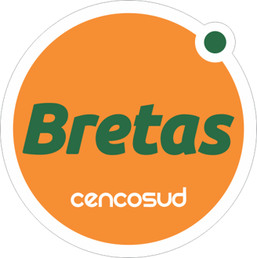
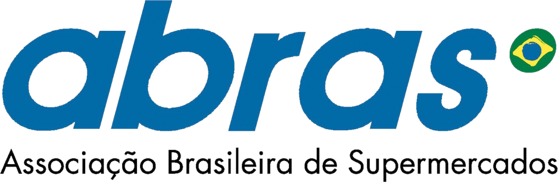
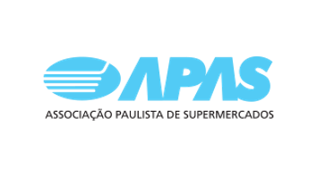

Savegnago
Supermercados
Marca presente na apresentação institucional da Pró Super, que reúne parte dos supermercados atendidos ao longo da trajetória.
Cliente Pró Super
Algumas das empresas e entidades que fazem parte da trajetória da Pró Super, consultoria especializada em supermercados desde 1990.
Mais de 400 supermercados atendidos em uma história construída com diagnóstico, organização de processos e capacitação das equipes.
Marca presente na apresentação institucional da Pró Super, que reúne parte dos supermercados atendidos ao longo da trajetória.
Marca presente na apresentação institucional da Pró Super, que reúne parte dos supermercados atendidos ao longo da trajetória.

Marca presente na apresentação institucional da Pró Super, que reúne parte dos supermercados atendidos ao longo da trajetória.

Marca presente na apresentação institucional da Pró Super, que reúne parte dos supermercados atendidos ao longo da trajetória.

Marca presente na apresentação institucional da Pró Super, que reúne parte dos supermercados atendidos ao longo da trajetória.

Marca presente na apresentação institucional da Pró Super, que reúne parte dos supermercados atendidos ao longo da trajetória.

Marca presente na apresentação institucional da Pró Super e em sua trajetória de atuação no setor supermercadista.

Marca presente na apresentação institucional que reúne parte das empresas atendidas pela Pró Super.

Associação Brasileira de Supermercados, entidade presente na trajetória profissional e institucional da Pró Super.

Associação Paulista de Supermercados, entidade presente na trajetória profissional de Flávio Constant Pires.
Transforme seu supermercado com diagnóstico grátis e consultoria especializada. Flávio Constant Pires está pronto para ajudar.
Solicitar Diagnóstico Grátis